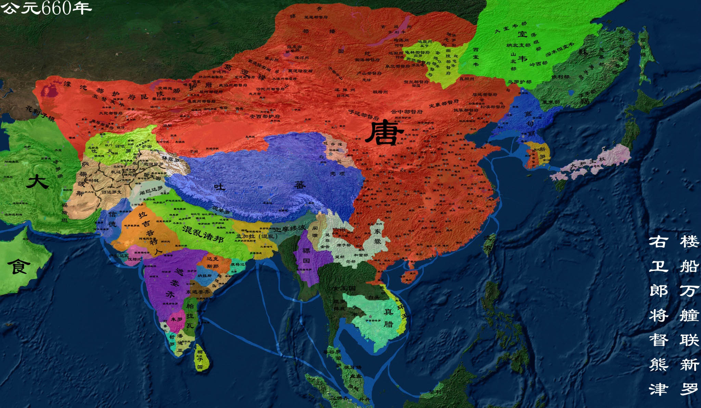

唐朝
唐朝（618年—907年），是中国封建社会继隋朝之后的强盛王朝，历经289年，共21位皇帝。 因皇室姓李，故称为李唐，又因与隋朝的政治制度、社会文化等一脉相承，故又被史学家合称为隋唐。
【相关人物】
[李世民]
[魏征]
[杨玉环]
[李渊]
.......
[更多人物]
【相关书籍】
[唐诗三百首]
[资治通鉴]
[新唐书]
[旧唐书]
.......
[更多书籍]

公元618年 唐朝建立
公元618年，李渊听说隋炀帝在江都被宇文化及勒死的消息后，便把杨侑赶下了台，自己做了皇帝，建立了唐朝，历史上称他为唐高祖。 隋炀帝虽然死了，但东都洛阳还在隋炀帝的孙子杨侗和大臣王世充手中。王世充拥立杨侗为皇帝，即隋越王，仍打着隋朝的旗号，继续与起义军为敌。 李渊派李世民等先后消灭了各支起义军和割据势力，直到公元623年，才使唐统一中国的战争基本结束。
公元626年 玄武门之变
玄武门之变，是唐高祖武德九年六月初四（公元626年7月2日），由当时唐高祖李渊次子秦王李世民在唐王朝的首都长安城（今陕西省西安） 太极宫的北宫门——玄武门附近发动的一次政变。在起兵反隋的过程中，李氏兄弟二人配合仍算默契，直到建立唐朝。唐高祖李渊即位后，李建 成为太子，常驻宫内处理事务，为文官集团代表。李世民为秦王，继续率领武将集团带兵出征，功劳也最大。
公元627年 贞观之治
贞观之治是唐朝初年唐太宗在位期间出现的清明政治，经济复苏，文化繁荣的治世局面。唐太宗继承唐高祖制定的尊祖崇道国策，并进一步将其 发扬光大，运用道家思想治国平天下。唐太宗任人廉能，知人善用；广开言路，尊重生命，自我克制，虚心纳谏；并采取了以农为本，厉行节约， 休养生息，文教复兴，完善科举制度等政策，使得社会出现了安定的局面；并大力平定外患，尊重边族风俗，稳固边疆，最终取得天下大治的理 想局面。因其时年号为“贞观”（627年—649年） ，故史称“贞观之治”。
公元655年 武则天立皇后
武则天（624年－705年12月16日），。中国历史上唯一的正统女皇帝（690年－705年在位）， 也是即位年龄最大（67岁）、寿命最长的皇帝之一（82岁），与汉朝的吕后并称为“吕武”。武则天为荆州都督武士彟次女。十四岁时进入后宫， 为唐太宗才人，获赐号“武媚” 。唐高宗时封昭仪，在“废王立武”事件后成为皇后，上元元年（674年），加号“天后”，与高宗并称“二圣”， 参预朝政。
公元690年 武则天改国号为周
武则天废睿宗，改国号“唐”为“周”，定都洛阳。武则天称帝后，更重视人才的选拔和使用。她认为“九域之广，岂一人之强化，必伫才能，共成羽翼”。 凡能“安邦国”、“定边疆”的人才，她不计门第，不拘资格，一律量才使用。
公元705年 唐中宗复辟改国号为“唐”
唐中宗李显（656年11月26日—710年7月3日）。唐朝第四位皇帝，唐高宗李治第七子，武则天第三子，唐睿宗李旦同母兄。 683年-684年、705年-710年两度在位。唐中宗李显前后两次当政，共在位五年半，景龙四年（710年）六月壬午被毒死， 终年55岁，谥号大和大圣大昭孝皇帝（初谥孝和皇帝），葬于定陵。
公元713年 开元盛世
开元盛世，是指唐朝在唐玄宗治理下出现的盛世。 唐玄宗登基以后治国之道以道家清静无为思想为宗提倡文教。任用贤能姚崇，宋璟等，改革官职，整顿吏治，励精图治。 开元年间唐朝进入全盛时期，中国封建社会达到顶峰阶段。因当时年号为“开元”，史称“开元盛世”。
公元753年 鉴真东渡
唐朝时，很多中国人为中日两国人民的交流作出了贡献。他们当中，最突出的是高僧鉴真。他不畏艰险，东渡日本， 讲授佛学理论，传播博大精深的中国文化，促进了日本佛学、医学、建筑和雕塑水平的提高，受到中日人民和佛学界的尊敬。
公元755年 安史之乱
安史之乱是中国唐代玄宗末年至代宗初年(755年12月16日至763年2月17日)由唐朝将领安禄山与史思明背叛唐朝后发动的战争， 是同唐朝争夺统治权的内战，为唐由盛而衰的转折点。这场内战使得唐朝人口大量丧失，国力锐减。因为发起反唐叛乱的指挥官以 安禄山与史思明二人为主，因此事件被冠以安史之名。 又由于其爆发于唐玄宗天宝年间，也称天宝之乱。
公元756年 马嵬驿兵变
公元755年，安史之乱爆发。天宝十四年（755年）十一月初九，安禄山借口讨伐杨国忠发动叛乱，是为安史之乱。 叛军一路势如破竹，直捣京师长安，天宝十五年（756年），叛军攻破长安门户潼关，长安无险可守，唐王朝统治集团惊慌失措。 随行将士处死宰相杨国忠，并强迫杨玉环自尽，史称“马嵬驿兵变”。
公元762年 李白去世
李白（701年－762年），唐代伟大的浪漫主义诗人，被后人誉为“诗仙”，与杜甫并称为“李杜”， 为了与另两位诗人李商隐与杜牧即“小李杜”区别，杜甫与李白又合称“大李杜”。据《新唐书》记载， 李白为兴圣皇帝（凉武昭王李暠）九世孙，与李唐诸王同宗。其人爽朗大方，爱饮酒作诗，喜交友。
公元770年 杜甫去世
杜甫（712年—770年），唐代伟大的现实主义诗人，与李白合称“李杜”。原籍湖北襄阳，后徙河南巩县。 为了与另两位诗人李商隐与杜牧即“小李杜”区别，杜甫与李白又合称“大李杜”，杜甫也常被称为“老杜”。 杜甫的思想核心是儒家的仁政思想，他有“致君尧舜上，再使风俗淳”的宏伟抱负。杜甫虽然在世时名声并不显赫， 但后来声名远播，对中国文学和日本文学都产生了深远的影响。
公元835年 甘露之变
公元835年（唐太和九年），27岁的唐文宗不甘为宦官控制，和李训、郑注策划诛杀宦官，以夺回皇帝丧失的权力。 11月21日，唐文宗以观露为名，将宦官头目仇士良骗至禁卫军的后院欲斩杀，被仇士良发觉，双方激烈战斗，结果 李训、王涯、贾餗、舒元舆、王璠、郭行余、罗立言、李孝本、韩约等朝廷重要官员被宦官杀死，其家人也受到牵 连而灭门，在这次事变后受株连被杀的一千多人。史称“甘露之变”。
公元841年 唐武宗灭佛
会昌毁佛指唐武宗李炎在位期间（840年-846年），推行一系列“灭佛”政策，以会昌五年（845年）四月颁布的敕令为高峰， 而会昌六年唐武宗逝世、唐宣宗即位又重新尊佛，灭佛就此结束。这一事件使佛教在中国受到严重打击，史称“唐武宗灭佛”或“武宗灭佛”。 因唐武宗年号“会昌”，故佛教徒又称之为「会昌法难」，将它与之前的北魏太武帝灭佛、北周武帝灭佛和后来的后周世宗灭佛并称为“三武一宗”。
公元874年 军阀混战时期开始
黄巾之后，汉中央政权名存实亡，进入军阀混战。 唐政府为防止各族的进犯，扩充军镇，设立节度使。睿宗始设，玄宗时期， 共设九个节度使和一个经略使。各地的节度使拥有军事，财政，监察管内州县等权力。节度使的设立导致安史之乱，安史之乱 亦导致藩镇割据，乾符二年黄巢领导的农民战争直接导致唐中央政权瓦解，进入军阀混战。
公元907年 唐亡
天复元年（901年）宰相崔胤联合禁军将领孙德昭打败了刘季述，迎唐昭宗复位，李裕复降德王。而朱温与李克用成为唐末的风云人物， 在朝廷各树党派，在朱温的支持下，宰相派胜利，朱温入宫尽诛宦官。天祐元年（904年），朱温挟持唐昭宗迁都洛阳，之后不久将唐昭宗杀害。 天祐二年（905年），朱温大肆贬逐朝官，并将三十余位朝臣杀死于白马驿，投尸于河，史称白马驿之祸。天祐四年（907年）， 朱温逼唐哀帝李柷禅位，改国号梁，是为梁太祖，改元开平，定都于开封。唐朝灭亡，立国共290年。